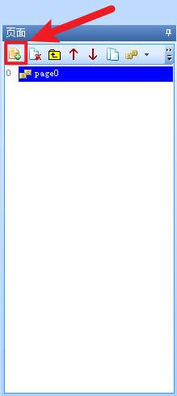
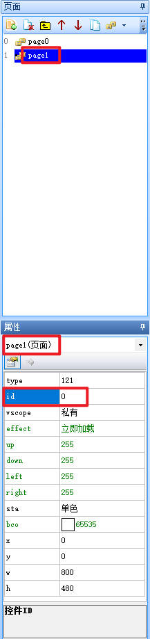
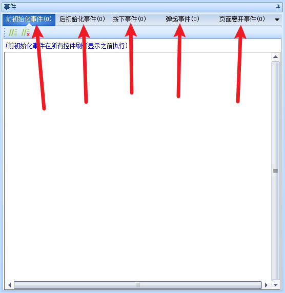
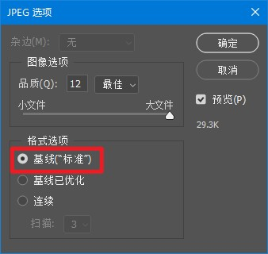
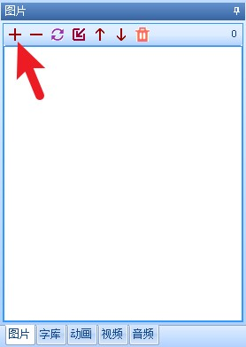
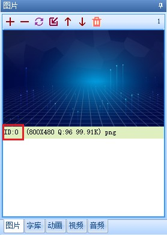
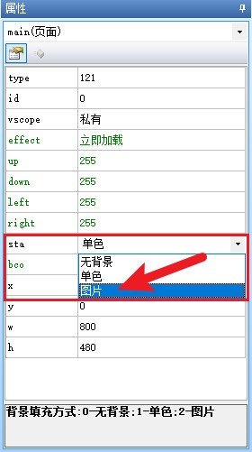
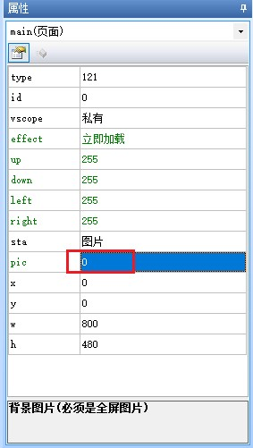
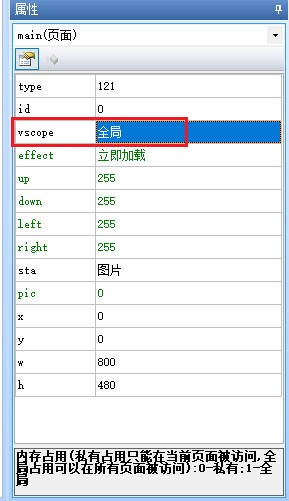
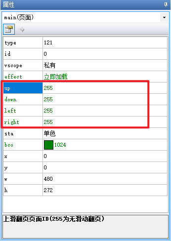

页面控件
提示
视频教程： 页面控件
提示
在上位机软件中每新建一个页面,会自动在页面中创建一个页面控件,其id固定为0,页面控件名称与页面名称一致,因此页面内的其他控件不能和页面名称相同，因为这个名称被页面控件使用了
在页面空白处点击鼠标左键,会选中当前页面的页面控件
如何新建一个页面
点击此按钮,会新建一个空白页面

例如新建的页面名称为page1,会自动在页面中创建一个页面控件page1(与页面名称相同),其id固定为0。

页面控件拥有以下五个事件

前初始化事件
每次在执行page命令时，在执行页面刷新操作以前，串口屏会自动执行一次《前初始化事件》中的代码。
后初始化事件
每次在执行page命令时，在页面刷新操作完成以后，串口屏会自动执行一次《后初始化事件》中的代码。
页面按下事件
显示区域内且没有控件的区域，触摸被按下的瞬间，串口屏会自动执行一次页面的《按下事件》中的代码。
页面弹起事件
显示区域内且没有控件的区域（以触摸按下是的坐标为准），触摸按下以后松开触摸的的瞬间，串口屏会自动执行一次页面的《弹起事件》中的代码。
页面离开事件
每次在执行page切换新的页面前，串口屏会自动执行一次当前页面的《页面离开事件》中的代码。
页面控件-使用详解
设置页面的背景图片
背景图片必须是全屏图片，即背景图片分辨率与要和页面控件的w、h大小一致，图片不能带有透明色，否则会出现花屏问题。
建议使用jpg格式，使用PS之类的工具输出jpg图片时，格式选择基线（“标准”）。

1.找到图片资源标签，点击加号，导入一张图片

2.记住图片的id号

3.将页面的sta改为图片

4.设置页面的pic属性为0（对应图片的id号）

以上图为例，页面名称为main，sta为图片，我们可以通过设置pic属性来切换背景图片（背景图片必须是全屏图片，即背景图片分辨率与屏幕的分辨率相同）。
main.pic=1
还可以通过名称组的方式来设置pic属性（页面控件的id必定为0）。
b[0].pic=1
切换其他页面的背景图片

将页面控件的vscope设置为全局，这意味着我们可以跨页面来操作页面控件的属性。
main.main.pic=1 //第一个main是页面名称，第二个main是页面控件，页面控件与页面名称同名
注意
第一个main是页面名称，第二个main是页面控件名称
还可以通过名称组的方式来设置页面控件的pic属性。
p[0].b[0].pic=1
设置页面滑动翻页
仅X系列支持。
可以通过设置页面的up/down/left/right属性来设置上划下划左划右划分别跳转到哪个页面。

页面控件-样例工程下载
演示工程下载链接：
页面控件-相关链接
哪些控件属性可以运行中修改，哪些不能运行中修改，绿色属性和黑色属性有什么区别？
页面控件-属性详解
提示
绿色属性可以通过上位机或者串口屏指令进行修改，黑色属性只能在上位机中修改或者不可修改，可通过上位机进行修改指“选中控件后通过属性栏修改控件的属性”
type属性 -控件类型，固定值，不同类型的控件type值不同，相同类型的控件type值相同，可读，不可通过上位机修改，不可通过指令修改。参考： 控件属性-控件id对照表
id属性 -控件ID，可通过上位机左上角的上下箭头置顶或置底，可读，可通过上位机修改左上角的箭头置顶或置地间接修改，不可通过指令修改。参考： 如何更改控件的前后图层关系
页面控件的id属性比较特殊，是固定为0的，无法通过置顶或置底更改。
vscope属性 -内存占用(私有占用只能在当前页面被访问，全局占用可以在所有页面被访问)，当设置为私有时，跳转页面后，该控件占用的内存会被释放，重新返回该页面后该控件会恢复到最初的设置。可读，可通过上位机进行修改，不可通过指令更改。参考：跨页面赋值，全局变量操作
effect属性 -加载特效，仅x系列支持，可读，可通过上位机修改，可通过指令修改。在上位机中设置为立即加载时，无法通过指令变为其他特效，当在上位机中设置为非立即加载的特效时，可以变为立即加载，也可以再改为其他特效。当页面为开机第一个页面时，无法显示特效，可以增加一个全黑的页面，开机时先跳转到这个全黑的页面，然后再跳转到原本的开始页面，就能正常显示特效了。
up属性 -上滑翻页页面ID(255为无滑动翻页)，仅x系列支持，可读，可通过上位机修改，可通过指令修改。
down属性 -下滑翻页页面ID(255为无滑动翻页)，仅x系列支持，可读，可通过上位机修改，可通过指令修改。
left属性 -左滑翻页页面ID(255为无滑动翻页)，仅x系列支持，可读，可通过上位机修改，可通过指令修改。
right属性 -右滑翻页页面ID(255为无滑动翻页)，仅x系列支持，可读，可通过上位机修改，可通过指令修改。
sta属性 -背景填充方式:0-无背景;1-单色;2-图片;可读，可通过上位机修改，不可通过指令修改。
bco属性 -背景色，仅sta设置为单色时可用。
pic属性 -背景图片(必须是全屏图片)，仅sta设置为图片时可用，不允许为空。
x属性 -控件的X坐标。可读，固定为0，不可修改。
y属性 -控件的Y坐标。可读，固定为0，不可修改。
w属性 -控件的宽度。可读，固定值（根据屏幕分辨率决定），不可修改。
h属性 -控件的高度。可读，固定值（根据屏幕分辨率决定），不可修改。